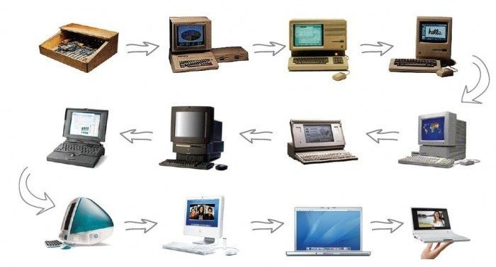

Con el pasar de los años, la tecnología ha facilitado que la interacción con las personas sea más natural, como por ejemplo ahora se pueden usar gestos, voz, movimientos corporales en lugar de usar solamente el teclado o el mouse. De esta manera, también en la ingeniería de sistemas, los usuarios necesitan mucha precisión en el momento de mandar una orden al sistema y mucha facilidad de uso, implicando siempre mantener actualizados estos sistemas para evitar errores de interpretación de movimientos del usuario.
